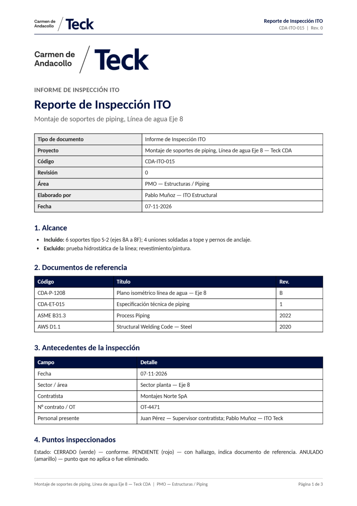
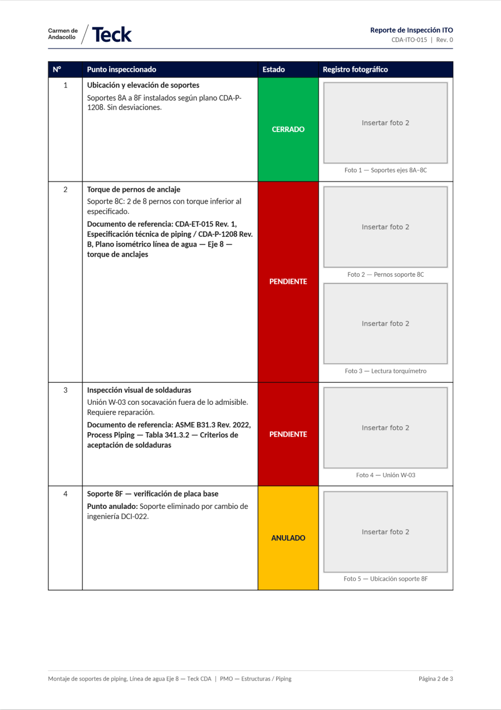
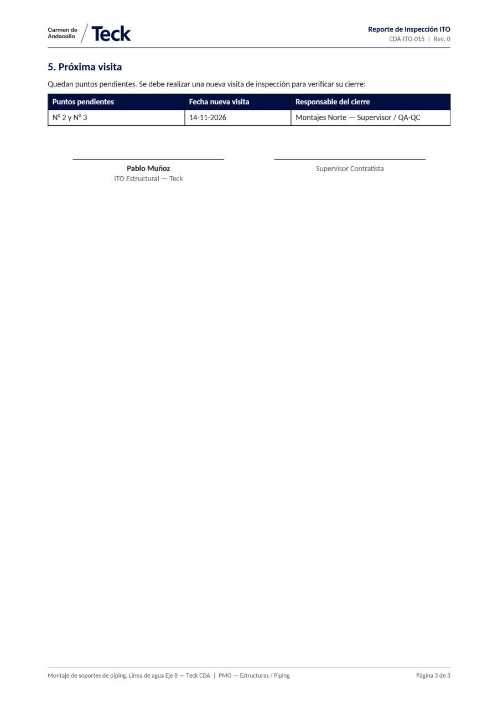
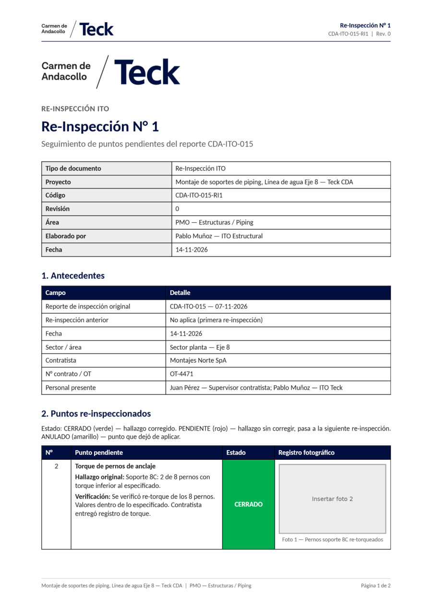
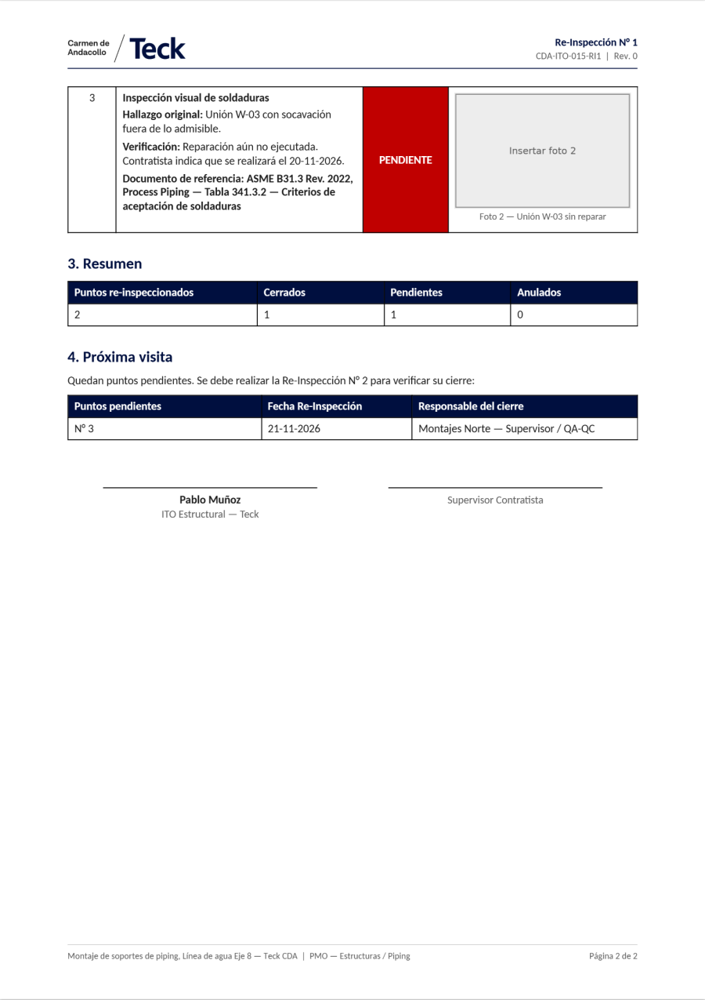

<title>Manual Inspección ITO</title>
<meta name="claude:viewport-fit-sides" content="cover">
<link rel="stylesheet" href="https://fonts.googleapis.com/css2?family=Carlito:ital,wght@0,400;0,700;1,400&display=swap">
<style>
  /* Manual interactivo: texto a la izquierda, un "teléfono" a la derecha que recorre las pantallas reales. */
  :root {
    --azul: #000F3F; --azul-texto: #000F3F;
    --fondo: #FFFFFF; --papel: #F4F5F7; --texto: #1B1B1B; --suave: #595959; --borde: #C9CDD4;
    --ok: #00B050; --pen: #C00000; --anu: #FFC000; --rev: #595959;
    --marco: #1F2430; --sombra: rgba(0, 15, 63, .18);
    --display: Carlito, Calibri, "Segoe UI", sans-serif; --body: Carlito, Calibri, "Segoe UI", sans-serif;
  }
  @media (prefers-color-scheme: dark) { :root:not([data-theme="light"]) {
    --azul: #1C2E6B; --azul-texto: #AFC0FF; --fondo: #12151C; --papel: #1B1F28; --texto: #E8EAF0; --suave: #A8AEBB; --borde: #333A48;
    --marco: #0A0C12; --sombra: rgba(0,0,0,.5); color-scheme: dark;
  } }
  :root[data-theme="dark"] {
    --azul: #1C2E6B; --azul-texto: #AFC0FF; --fondo: #12151C; --papel: #1B1F28; --texto: #E8EAF0; --suave: #A8AEBB; --borde: #333A48;
    --marco: #0A0C12; --sombra: rgba(0,0,0,.5); color-scheme: dark;
  }
  body { background: var(--fondo); color: var(--texto); font-family: var(--body); font-size: 17px; line-height: 1.5; }
  * { box-sizing: border-box; }
  h1, h2, h3 { font-family: var(--display); color: var(--azul-texto); text-wrap: balance; line-height: 1.15; margin: 0; }
  a { color: var(--azul-texto); }
  .banda { background: #000F3F; color: #fff; }
  .banda .int { padding-block: 22px 26px; }
  .int { max-width: 1120px; margin: 0 auto; padding-left: max(16px, env(safe-area-inset-left, 0px)); padding-right: max(16px, env(safe-area-inset-right, 0px)); }
  .cab { display: flex; align-items: center; justify-content: space-between; gap: 16px; flex-wrap: wrap; }
  .cab img { height: 34px; width: auto; }
  .cab .v { font-size: 14px; opacity: .85; }
  .hero { display: grid; grid-template-columns: 1.3fr 1fr; gap: 28px; align-items: center; padding-block: 34px 10px; }
  .hero h1 { font-size: clamp(32px, 5vw, 50px); color: #fff; }
  .hero p { font-size: 19px; opacity: .9; max-width: 56ch; }
  .hero .icono { width: 96px; border-radius: 22px; box-shadow: 0 8px 30px rgba(0,0,0,.35); }
  .eyebrow { font-size: 13px; letter-spacing: .12em; text-transform: uppercase; font-weight: 700; color: var(--suave); }
  .banda .eyebrow { color: #B9C3E6; }

  nav.toc { position: sticky; top: env(safe-area-inset-top, 0px); z-index: 5; background: var(--fondo); border-bottom: 1px solid var(--borde); }
  nav.toc .int { display: flex; gap: 6px; overflow-x: auto; padding-block: 8px; scrollbar-width: thin; }
  nav.toc a { white-space: nowrap; font-size: 14px; font-weight: 700; padding: 6px 10px; border-radius: 3px; text-decoration: none; border: 1px solid transparent; }
  nav.toc a:hover, nav.toc a:focus-visible { border-color: var(--borde); background: var(--papel); outline: none; }
  body::before { content: ""; position: fixed; inset: 0 0 auto; height: env(safe-area-inset-top, 0px); z-index: 10; background: var(--fondo); }

  section.cap { padding-block: 44px 20px; border-bottom: 1px solid var(--borde); }
  section.cap .cuerpo { display: grid; grid-template-columns: minmax(0, 1fr) 360px; gap: 36px; align-items: start; }
  section.cap h2 { font-size: 30px; margin-bottom: 10px; }
  section.cap h3 { font-size: 20px; margin: 22px 0 6px; }
  section.cap p, section.cap li { max-width: 68ch; }
  .nota { background: var(--papel); border-left: 4px solid var(--azul); padding: 10px 14px; margin: 12px 0; border-radius: 0; }
  .aviso { background: color-mix(in srgb, var(--anu) 18%, var(--papel)); border-left: 4px solid var(--anu); padding: 10px 14px; margin: 12px 0; }
  kbd { font-family: inherit; font-weight: 700; color: var(--azul-texto); background: var(--papel); border: 1px solid var(--borde); border-radius: 3px; padding: 0 5px; font-size: .95em; }
  .chip { display: inline-block; font-weight: 700; padding: 0 8px; border-radius: 3px; font-size: 14px; letter-spacing: .02em; }
  .c-ok { background: var(--ok); color: #fff; } .c-pen { background: var(--pen); color: #fff; } .c-anu { background: var(--anu); color: #000F3F; } .c-rev { background: var(--rev); color: #fff; }
  table { border-collapse: collapse; width: 100%; font-size: 15px; margin: 8px 0 14px; }
  th, td { border: 1px solid var(--borde); padding: 6px 8px; text-align: left; vertical-align: top; }
  th { background: var(--azul); color: #fff; }
  .tabla-wrap { overflow-x: auto; }

  /* Reproductor de pantallas */
  .player { position: sticky; top: calc(env(safe-area-inset-top, 0px) + 54px); }
  .phone { position: relative; width: 100%; aspect-ratio: 412 / 915; background: var(--marco); border-radius: 34px; padding: 10px; box-shadow: 0 18px 40px var(--sombra); }
  .phone .pant { position: relative; width: 100%; height: 100%; border-radius: 26px; overflow: hidden; background: #fff; }
  .phone img { position: absolute; inset: 0; width: 100%; height: 100%; object-fit: cover; object-position: top; opacity: 0; transition: opacity .55s ease, transform .55s ease; transform: scale(1.015); }
  .phone img.on { opacity: 1; transform: none; }
  .player .pie { margin-top: 12px; min-height: 76px; }
  .player .pie b { color: var(--azul-texto); display: block; font-size: 17px; }
  .player .pie span { color: var(--suave); font-size: 15px; display: block; }
  .ctrl { display: flex; align-items: center; gap: 8px; margin-top: 8px; }
  .ctrl button { font: inherit; font-weight: 700; font-size: 15px; background: var(--azul); color: #fff; border: 0; border-radius: 3px; min-height: 40px; padding: 0 14px; cursor: pointer; }
  .ctrl button.sec { background: transparent; color: var(--azul-texto); border: 2px solid var(--azul); }
  .ctrl button:focus-visible { outline: 3px solid var(--anu); outline-offset: 2px; }
  .dots { display: flex; gap: 5px; flex: 1; justify-content: center; flex-wrap: wrap; }
  .dots i { width: 9px; height: 9px; border-radius: 50%; background: var(--borde); cursor: pointer; }
  .dots i.on { background: var(--azul); transform: scale(1.25); }
  .barra { height: 3px; background: var(--borde); border-radius: 2px; overflow: hidden; margin-top: 8px; }
  .barra i { display: block; height: 100%; width: 0; background: var(--azul); }
  .barra i.run { animation: avanza var(--dur, 4.5s) linear forwards; }
  @keyframes avanza { to { width: 100%; } }

  /* Flujo animado */
  .flujo { display: flex; flex-wrap: wrap; gap: 8px; align-items: center; margin: 14px 0 4px; }
  .flujo .paso { background: var(--papel); border: 2px solid var(--borde); border-radius: 3px; padding: 8px 12px; font-weight: 700; color: var(--suave); transition: all .4s; }
  .flujo .paso.on { background: var(--azul); color: #fff; border-color: var(--azul); }
  .flujo .fl { color: var(--suave); }
  .paginas { display: grid; grid-template-columns: repeat(auto-fit, minmax(240px, 1fr)); gap: 14px; margin: 14px 0; }
  .paginas figure { margin: 0; }
  .paginas img { width: 100%; height: auto; border: 1px solid var(--borde); box-shadow: 0 2px 8px var(--sombra); }
  .paginas figcaption { font-size: 14px; color: var(--suave); margin-top: 6px; }
  .pregunta { margin: 10px 0 14px; }
  .pregunta b { color: var(--azul-texto); display: block; }
  footer { padding-block: 26px 40px; color: var(--suave); font-size: 14px; }

  @media (max-width: 860px) {
    section.cap .cuerpo { grid-template-columns: minmax(0, 1fr); }
    .player { position: static; max-width: 340px; margin: 0 auto; }
    .hero { grid-template-columns: 1fr; }
  }
  @media (prefers-reduced-motion: reduce) {
    .phone img { transition: none; transform: none; }
    .barra i.run { animation: none; width: 100%; }
    .flujo .paso { transition: none; }
  }
</style>

<header class="banda">
  <div class="int cab">
    
    <span class="v">Manual de uso · versión 1.1.0 · noviembre de 2026</span>
  </div>
  <div class="int hero">
    <div>
      <p class="eyebrow">Manual interactivo</p>
      <h1>Inspección ITO — Teck CDA</h1>
      <p>Cómo usar la app de inspecciones en terreno: desde crear un proyecto hasta compartir el reporte PDF. Cada capítulo tiene un teléfono que recorre las pantallas reales; puedes dejarlo avanzar solo o moverlo con las flechas.</p>
    </div>
    <div style="text-align:center"></div>
  </div>
</header>

<nav class="toc" aria-label="Capítulos"><div class="int" id="toc"></div></nav>

<main id="main"></main>

<footer class="int">Las capturas son pantallas reales de la app con un proyecto de ejemplo; las fotos aparecen como recuadros «Insertar foto» porque el ejemplo no tiene fotos de terreno. Para descargar el manual en PDF, pídeselo a quien administra la app.</footer>

<script>
// ---------- Contenido ----------
// Cada capítulo: texto (html) y los pasos que recorre el teléfono (imagen, título y explicación).
const CAPITULOS = [
  {
    id: 'que-hace', titulo: '1. Qué hace la app',
    html: `
      <p><b>Inspección ITO — Teck CDA</b> sirve para hacer inspecciones en terreno con el teléfono y obtener al final un reporte PDF con el formato oficial de Teck: logo, tablas, estado de cada punto en color, fotos numeradas, firmas y «Página X de Y».</p>
      <p>Trabaja con <b>proyectos</b>. Cada proyecto tiene <b>sectores</b> y cada sector tiene <b>puntos de inspección</b>. En la <b>Primera Inspección</b> se revisan todos los puntos; los que quedan pendientes se vuelven a revisar en <b>Re-Inspecciones</b> (N° 1, N° 2, N° 3…) hasta que no quede ninguno.</p>
      <div class="flujo" id="flujo">
        <span class="paso">Configurar proyecto</span><span class="fl">→</span>
        <span class="paso">Primera Inspección</span><span class="fl">→</span>
        <span class="paso">Reporte PDF</span><span class="fl">→</span>
        <span class="paso">Re-Inspección N° 1, 2…</span><span class="fl">→</span>
        <span class="paso">Todo cerrado</span>
      </div>
      <h3>Instalación y permisos</h3>
      <ol>
        <li>Abre en el teléfono el enlace del APK y toca <kbd>Instalar</kbd>. Si Android pregunta, permite «instalar apps desconocidas». Si aparece Play Protect, toca <kbd>Más detalles</kbd> → <kbd>Instalar de todas formas</kbd>.</li>
        <li>La app pide un solo permiso, la <b>cámara</b>, la primera vez que tomas una foto.</li>
        <li>Para actualizar, instala el APK nuevo encima: tus datos se conservan.</li>
      </ol>
      <h3>Funciona sin internet</h3>
      <p>Todo queda guardado dentro del teléfono. No necesitas señal en ningún paso, ni para generar el PDF. Solo la necesitas para <b>compartir</b> el reporte.</p>
      <div class="aviso"><b>Respaldo.</b> Los datos existen solo en ese teléfono. Comparte los PDF apenas los generes (correo o Drive): ese es tu respaldo.</div>`,
    pasos: [
      ['proyectos', 'Pantalla principal', 'La lista de proyectos, con filtros por estado y accesos al dashboard (📊) y a los ajustes (⚙).'],
      ['detalle-proyecto', 'Un proyecto', 'Datos, resumen de puntos en colores y el botón principal según la etapa en que esté.'],
      ['reporte', 'El reporte', 'El PDF se ve dentro de la app y se comparte con un botón.'],
    ],
  },
  {
    id: 'primeros-pasos', titulo: '2. Primeros pasos',
    html: `
      <h3>Ajustes del inspector</h3>
      <p>Toca el ícono <b>⚙</b> de la pantalla principal y escribe tu <b>nombre</b> y tu <b>cargo</b>. Aparecen en «Elaborado por» y en la firma de todos los reportes, y la app los usa para rellenar el personal presente.</p>
      <h3>La pantalla principal</h3>
      <p>Cada tarjeta muestra nombre, código, área y estado del proyecto. Los botones <kbd>Todos</kbd>, <kbd>Pendiente</kbd>, <kbd>En ejecución</kbd> y <kbd>Cerrado</kbd> filtran la lista.</p>
      <div class="nota"><b>Estado del proyecto.</b> Es administrativo y lo cambias tú desde el detalle del proyecto. No cambia solo.</div>`,
    pasos: [
      ['proyectos', 'Pantalla principal', 'Toca ⚙ arriba a la derecha para abrir los ajustes.'],
      ['ajustes', 'Ajustes', 'Nombre y cargo del inspector. Toca Guardar.'],
    ],
  },
  {
    id: 'crear-proyecto', titulo: '3. Crear un proyecto',
    html: `
      <p>Toca <kbd>+ Nuevo proyecto</kbd>. Lo que escribas va directo a la portada y a las tablas del PDF.</p>
      <div class="tabla-wrap"><table>
        <tr><th>Campo</th><th>Para qué sirve</th><th>Ejemplo</th></tr>
        <tr><td>Nombre</td><td>Nombre del trabajo. Va en la portada y en el pie de página.</td><td>Montaje de soportes de piping, Eje 8</td></tr>
        <tr><td>Código</td><td>Código del reporte. Las re-inspecciones agregan -RI1, -RI2…</td><td>CDA-ITO-015</td></tr>
        <tr><td>Revisión</td><td>Revisión del documento. Parte en 0.</td><td>0</td></tr>
        <tr><td>Área</td><td>Área de la planta o del proyecto.</td><td>PMO — Estructuras / Piping</td></tr>
        <tr><td>Contratista</td><td>Empresa contratista.</td><td>Montajes Norte SpA</td></tr>
        <tr><td>N° contrato / OT</td><td>Contrato u orden de trabajo.</td><td>OT-4471</td></tr>
      </table></div>
      <h3>Alcance y documentos de referencia</h3>
      <p>El <b>alcance</b> son dos listas: lo incluido y lo excluido. Los <b>documentos de referencia</b> (planos, especificaciones, normas) llevan código, título y revisión, y se pueden <b>citar en cada punto pendiente</b> desde un menú.</p>
      <h3>Sectores y puntos</h3>
      <p>Después de guardar, entra al proyecto y toca <kbd>Sectores y puntos</kbd>. Agrega un <b>sector</b> por zona de la obra y, dentro, un <b>punto</b> por cada cosa concreta que se revisa. Cada punto recibe un <b>N° fijo</b> que se mantiene en todos los reportes.</p>
      <div class="nota"><b>Puntos agregados después</b> de la Primera Inspección aparecen en la siguiente Re-Inspección como «Punto nuevo».</div>`,
    pasos: [
      ['nuevo-proyecto', 'Nuevo proyecto', 'Nombre, código y área son obligatorios; el resto se puede completar después.'],
      ['editar-proyecto-alcance', 'Alcance', 'Ítems incluidos y excluidos, cada uno con Editar y Borrar.'],
      ['editar-proyecto-documentos', 'Documentos de referencia', 'Código, título y revisión. Se citan en los puntos pendientes.'],
      ['agregar-documento', 'Agregar documento', 'Ventana para escribir un documento nuevo.'],
      ['sectores-puntos', 'Sectores y puntos', 'Cada punto con su N° fijo y su estado actual.'],
      ['agregar-sector', 'Agregar sector', 'Escribe el nombre del sector y toca Guardar.'],
    ],
  },
  {
    id: 'detalle', titulo: '4. El detalle del proyecto',
    html: `
      <p>Al tocar un proyecto se abre su pantalla principal:</p>
      <ul>
        <li><b>Tabla de datos</b> y el botón <kbd>Editar datos del proyecto</kbd>.</li>
        <li><b>Resumen de puntos</b>: <span class="chip c-ok">CERRADOS</span> <span class="chip c-pen">PENDIENTES</span> <span class="chip c-anu">ANULADOS</span> <span class="chip c-rev">POR REVISAR</span>.</li>
        <li><b>El botón principal</b>, que cambia según la etapa: <kbd>Iniciar Primera Inspección</kbd>, <kbd>Nueva Re-Inspección N° …</kbd>, <kbd>Continuar …</kbd> si hay una inspección a medio hacer, o el mensaje de que todo está cerrado.</li>
        <li><kbd>Puntos pendientes</kbd>, <kbd>Dashboard del proyecto</kbd> y <kbd>Sectores y puntos</kbd>.</li>
        <li><b>Estado del proyecto</b> y la lista de <b>reportes</b> generados.</li>
      </ul>`,
    pasos: [
      ['proyecto-sin-inspeccion', 'Proyecto nuevo', 'Todos los puntos por revisar: el botón ofrece iniciar la Primera Inspección.'],
      ['detalle-proyecto', 'Proyecto en marcha', 'Con una Re-Inspección en curso: Continuar o Descartar.'],
      ['detalle-proyecto-reportes', 'Más abajo', 'Estado del proyecto y los reportes generados, con sus totales.'],
    ],
  },
  {
    id: 'inspeccion', titulo: '5. La Primera Inspección, paso a paso',
    html: `
      <p>Revisa <b>todos</b> los puntos configurados. El recorrido es siempre el mismo:</p>
      <div class="flujo" id="flujo2">
        <span class="paso">Antecedentes</span><span class="fl">→</span><span class="paso">Elegir punto</span><span class="fl">→</span><span class="paso">Fotos</span><span class="fl">→</span><span class="paso">Cerrar punto</span><span class="fl">→</span><span class="paso">Finalizar</span><span class="fl">→</span><span class="paso">PDF</span>
      </div>
      <h3>Antecedentes</h3>
      <p>Fecha (viene la de hoy), sector / área y personal presente. Van a la tabla de antecedentes del PDF.</p>
      <h3>Elegir sector y punto</h3>
      <p>Dos menús grandes. Solo aparecen los puntos que todavía no se han revisado en esta inspección.</p>
      <h3>Fotos</h3>
      <p><kbd>📷 Tomar foto</kbd> abre la cámara; la foto se recorta en formato 3:2 como en el reporte. Toca una foto para escribir su <b>pie de foto</b> o quitarla. Si un punto no necesita foto, usa <kbd>Registrar sin foto</kbd>.</p>
      <h3>Cerrar el punto</h3>
      <div class="tabla-wrap"><table>
        <tr><th>Estado</th><th>Cuándo usarlo</th><th>Qué pide la app</th></tr>
        <tr><td><span class="chip c-ok">CERRADO</span></td><td>Conforme.</td><td>Nada más.</td></tr>
        <tr><td><span class="chip c-pen">PENDIENTE</span></td><td>Hay un hallazgo que corregir. Vuelve a aparecer en la próxima Re-Inspección.</td><td>Opcional: documentos de referencia y un detalle.</td></tr>
        <tr><td><span class="chip c-anu">ANULADO</span></td><td>El punto dejó de aplicar. No vuelve a aparecer.</td><td>El motivo, obligatorio.</td></tr>
      </table></div>
      <h3>Finalizar</h3>
      <ul>
        <li>Si quedan <b>puntos sin revisar</b>, la app avisa: puedes volver a revisarlos o anularlos con un motivo.</li>
        <li>Si quedan <b>pendientes</b>, pide la <b>próxima visita</b>: fecha y responsable del cierre.</li>
        <li>Toca <kbd>Generar PDF</kbd>: el reporte se arma en segundos y se abre en pantalla.</li>
      </ul>
      <div class="nota"><b>Si se cierra la app a mitad de camino</b> no se pierde nada: al volver al proyecto aparece <kbd>Continuar …</kbd> y retomas donde estabas.</div>`,
    pasos: [
      ['antecedentes-inspeccion', '1. Antecedentes', 'Fecha, sector / área y personal presente. Toca Comenzar.'],
      ['seleccion-punto', '2. Elegir punto', 'Primero el sector, luego el punto.'],
      ['menu-sector', 'Menú de sectores', 'Botones grandes, fáciles de tocar con guantes.'],
      ['menu-punto', 'Menú de puntos', 'Solo los puntos que faltan. Los pendientes van en rojo.'],
      ['punto-elegido', 'Punto elegido', 'Ya se puede tomar la foto o registrar sin foto.'],
      ['fotos-del-punto', '3. Fotos', 'Varias fotos por punto, cada una con su pie. Luego Continuar.'],
      ['cerrar-punto-cerrado', '4. Cerrar el punto', 'Observación y estado. Aquí, un punto conforme.'],
      ['cerrar-punto-pendiente', 'Punto pendiente', 'Aparecen el documento de referencia y el detalle.'],
      ['menu-documentos', 'Documentos', 'Se pueden marcar varios documentos del proyecto.'],
      ['puntos-sin-revisar', '5. Finalizar', 'Si quedan puntos sin revisar: volver a revisarlos o anularlos con motivo.'],
      ['proxima-visita', 'Próxima visita', 'Fecha y responsable del cierre. Luego Generar PDF.'],
      ['reporte', '6. PDF listo', 'El reporte se abre en pantalla, listo para compartir.'],
    ],
  },
  {
    id: 're-inspeccion', titulo: '6. Re-Inspecciones',
    html: `
      <p>Mientras queden puntos pendientes, el proyecto muestra <kbd>Nueva Re-Inspección N° 1</kbd> (luego N° 2, N° 3…). Funciona igual que la primera, con tres diferencias:</p>
      <ul>
        <li>Solo muestra los <b>puntos pendientes</b> y los <b>puntos nuevos</b>.</li>
        <li>Al cerrar un punto se ve el <b>hallazgo original</b> y el campo se llama <b>Verificación</b>. Si sigue sin corregirse, lo dejas PENDIENTE y pasa a la siguiente.</li>
        <li>El reporte tiene su propio formato y el código lleva el sufijo <b>-RI1</b>, <b>-RI2</b>…</li>
      </ul>
      <p>En una Re-Inspección sí puedes finalizar aunque queden puntos sin revisar: quedan para la siguiente.</p>`,
    pasos: [
      ['pendientes', 'Puntos pendientes', 'Desde aquí también se inicia o continúa la Re-Inspección.'],
      ['cerrar-punto', 'Hallazgo y verificación', 'La app recuerda el hallazgo original; tú escribes lo que encontraste ahora.'],
      ['seleccion-sin-puntos', 'Sin puntos por revisar', 'Cuando no queda ninguno, solo falta finalizar.'],
    ],
  },
  {
    id: 'historial', titulo: '7. Puntos pendientes e historial',
    html: `
      <p><kbd>Puntos pendientes</kbd> lista los puntos con hallazgo pendiente y los nuevos sin revisar, con la última observación y la fecha.</p>
      <p>Al tocar un punto (o <kbd>Historial</kbd> en «Sectores y puntos») se abre su historial completo: cada inspección en la que se revisó, con fecha, estado, observación, documento de referencia y fotos. Es la forma más rápida de ver cómo evolucionó un hallazgo.</p>`,
    pasos: [
      ['pendientes', 'Puntos pendientes', 'Toca un punto para ver su historial.'],
      ['historial-punto', 'Historial', 'De la revisión más reciente a la más antigua.'],
      ['historial-punto-2', 'Más abajo', 'La revisión de la Primera Inspección con su documento y sus fotos.'],
    ],
  },
  {
    id: 'reportes', titulo: '8. Los reportes PDF',
    html: `
      <p>Cada reporte queda en la lista <b>Reportes</b> del proyecto. Se abre dentro de la app, se puede <b>ampliar con dos dedos</b> y se comparte con <kbd>Compartir PDF</kbd> (WhatsApp, Gmail, Drive…). El archivo se llama como el código, por ejemplo <b>CDA-ITO-015_07-11-2026.pdf</b>.</p>
      <h3>Reporte de Primera Inspección</h3>
      <p>Portada con tabla de datos · 1. Alcance · 2. Documentos de referencia · 3. Antecedentes · 4. Puntos inspeccionados (N°, descripción, estado en color, fotos numeradas) · 5. Próxima visita · Firmas. Todas las páginas llevan encabezado y «Página X de Y».</p>
      <div class="paginas">
        <figure><figcaption>Página 1: portada, alcance, documentos y antecedentes.</figcaption></figure>
        <figure><figcaption>Página 2: puntos inspeccionados con estado y fotos.</figcaption></figure>
        <figure><figcaption>Página 3: próxima visita y firmas.</figcaption></figure>
      </div>
      <h3>Reporte de Re-Inspección</h3>
      <p>Portada con código -RI N° · 1. Antecedentes (reporte original, re-inspección anterior, fecha, sector, contratista, contrato, personal) · 2. Puntos re-inspeccionados (hallazgo original + verificación) · 3. Resumen · 4. Próxima visita · Firmas.</p>
      <div class="paginas">
        <figure><figcaption>Re-Inspección N° 1, página 1.</figcaption></figure>
        <figure><figcaption>Página 2: resumen, próxima visita y firmas.</figcaption></figure>
      </div>`,
    pasos: [
      ['detalle-proyecto-reportes', 'Lista de reportes', 'En el detalle del proyecto, con código, fecha y totales.'],
      ['reporte', 'Reporte abierto', 'El PDF dentro de la app. Abajo, Compartir PDF.'],
    ],
  },
  {
    id: 'dashboards', titulo: '9. Dashboards',
    html: `
      <h3>Dashboard del proyecto</h3>
      <p>Totales de puntos por estado, barra de colores, <b>% de avance</b> (cerrados sobre los que aplican; los anulados no cuentan) y la lista de inspecciones por fecha con lo que se cerró, anuló o quedó pendiente. Al tocar una inspección se abre su reporte.</p>
      <h3>Dashboard general</h3>
      <p>Desde el ícono 📊 de la pantalla principal: proyectos por estado, total de puntos y el <b>avance de cada proyecto</b>. Los proyectos con más puntos por cerrar aparecen primero.</p>`,
    pasos: [
      ['dashboard-proyecto', 'Dashboard del proyecto', 'Totales, barra y % de avance.'],
      ['dashboard-proyecto-inspecciones', 'Inspecciones por fecha', 'Cada una con lo cerrado, anulado y pendiente.'],
      ['dashboard-general', 'Dashboard general', 'Todos los proyectos de un vistazo.'],
      ['dashboard-general-avance', 'Avance por proyecto', 'Primero los que tienen más trabajo por cerrar.'],
    ],
  },
  {
    id: 'faq', titulo: '10. Consejos y preguntas frecuentes',
    html: `
      <div class="pregunta"><b>Configura el proyecto en la oficina.</b> Carga sectores, puntos, alcance y documentos antes de salir. En terreno solo eliges el punto, fotografías y escribes.</div>
      <div class="pregunta"><b>¿Tomé una foto mala?</b> Toca la foto y elige Quitar foto. Luego toma otra.</div>
      <div class="pregunta"><b>¿Me equivoqué al cerrar un punto?</b> Antes de guardar puedes volver con «Volver a las fotos». Si ya guardaste, corrígelo en la siguiente Re-Inspección o descarta la inspección completa desde el proyecto.</div>
      <div class="pregunta"><b>¿Puedo borrar un punto con inspecciones?</b> Sí, pero se borran su historial y sus fotos. Si dejó de aplicar, es mejor anularlo: queda en el reporte con su motivo.</div>
      <div class="pregunta"><b>¿El PDF tarda?</b> Unos segundos por cada 10 fotos. Las fotos se reducen dentro del PDF para que pese poco.</div>
      <div class="pregunta"><b>¿Dónde están mis PDF?</b> En la lista de reportes de cada proyecto. Para tenerlos fuera del teléfono, compártelos a Drive o por correo.</div>
      <div class="pregunta"><b>Cambié de teléfono.</b> Los datos no se traspasan. Comparte los PDF antes y vuelve a configurar los proyectos en el teléfono nuevo.</div>
      <h3>Resumen de estados</h3>
      <div class="tabla-wrap"><table>
        <tr><th>Estado</th><th>Significado</th><th>Vuelve a aparecer</th></tr>
        <tr><td><span class="chip c-rev">POR REVISAR</span></td><td>Todavía no se inspecciona (o se agregó después).</td><td>Sí, en la próxima inspección.</td></tr>
        <tr><td><span class="chip c-ok">CERRADO</span></td><td>Conforme o hallazgo corregido.</td><td>No.</td></tr>
        <tr><td><span class="chip c-pen">PENDIENTE</span></td><td>Con hallazgo por corregir. Lleva documento de referencia.</td><td>Sí, en la próxima Re-Inspección.</td></tr>
        <tr><td><span class="chip c-anu">ANULADO</span></td><td>Dejó de aplicar. Queda con su motivo.</td><td>No.</td></tr>
      </table></div>`,
    pasos: [
      ['anular-sin-revisar', 'Anular con motivo', 'Un punto que dejó de aplicar se anula con su motivo y queda en el reporte.'],
      ['sectores-puntos', 'Estados en la configuración', 'Cada punto muestra su estado actual.'],
    ],
  },
];

// ---------- Construcción de la página ----------
const reducido = matchMedia('(prefers-reduced-motion: reduce)').matches;
const toc = document.getElementById('toc');
const main = document.getElementById('main');
CAPITULOS.forEach((c, idx) => {
  const a = document.createElement('a');
  a.href = `#${c.id}`; a.textContent = c.titulo; toc.appendChild(a);

  const sec = document.createElement('section');
  sec.className = 'cap'; sec.id = c.id;
  const imgs = c.pasos.map((p, i) => ``).join('');
  sec.innerHTML = `<div class="int cuerpo">
    <div><p class="eyebrow">Capítulo ${idx + 1}</p><h2>${c.titulo.replace(/^\d+\.\s*/, '')}</h2>${c.html}</div>
    <div class="player" data-n="${c.pasos.length}">
      <div class="phone"><div class="pant">${imgs}</div></div>
      <div class="pie"><b></b><span></span></div>
      <div class="barra"><i></i></div>
      <div class="ctrl">
        <button class="sec" data-act="prev" aria-label="Pantalla anterior">‹</button>
        <div class="dots">${c.pasos.map((_, i) => `<i data-i="${i}" role="button" tabindex="0" aria-label="Pantalla ${i + 1}"></i>`).join('')}</div>
        <button class="sec" data-act="next" aria-label="Pantalla siguiente">›</button>
        <button data-act="play" aria-label="Reproducir o pausar">▶ Ver</button>
      </div>
    </div>
  </div>`;
  main.appendChild(sec);
  iniciarPlayer(sec.querySelector('.player'), c.pasos);
});

// ---------- Reproductor ----------
function iniciarPlayer(el, pasos) {
  const imgs = [...el.querySelectorAll('.phone img')];
  const dots = [...el.querySelectorAll('.dots i')];
  const titulo = el.querySelector('.pie b'), texto = el.querySelector('.pie span'), barra = el.querySelector('.barra i');
  const play = el.querySelector('[data-act=play]');
  let i = 0, timer = null, activo = false;
  const DUR = 4500;
  function mostrar(n) {
    i = (n + pasos.length) % pasos.length;
    imgs.forEach((im, k) => im.classList.toggle('on', k === i));
    dots.forEach((d, k) => d.classList.toggle('on', k === i));
    titulo.textContent = pasos[i][1];
    texto.textContent = pasos[i][2];
    barra.classList.remove('run'); void barra.offsetWidth; // reinicia la animación de la barra
    if (activo && !reducido) { barra.style.setProperty('--dur', DUR + 'ms'); barra.classList.add('run'); }
  }
  function arrancar() {
    if (pasos.length < 2) return;
    activo = true; play.textContent = '❚❚ Pausa';
    clearInterval(timer); timer = setInterval(() => mostrar(i + 1), DUR); mostrar(i);
  }
  function parar() { activo = false; play.textContent = '▶ Ver'; clearInterval(timer); timer = null; barra.classList.remove('run'); }
  el.querySelector('[data-act=prev]').onclick = () => { parar(); mostrar(i - 1); };
  el.querySelector('[data-act=next]').onclick = () => { parar(); mostrar(i + 1); };
  play.onclick = () => (activo ? parar() : arrancar());
  dots.forEach((d) => { d.onclick = () => { parar(); mostrar(+d.dataset.i); }; d.onkeydown = (e) => { if (e.key === 'Enter' || e.key === ' ') { e.preventDefault(); d.click(); } }; });
  mostrar(0);
  // Al llegar al capítulo, el recorrido arranca solo y se detiene al salir de la vista
  if (!reducido && 'IntersectionObserver' in window) {
    new IntersectionObserver((ents) => ents.forEach((e) => (e.isIntersecting ? (activo || arrancar()) : parar())), { threshold: 0.35 }).observe(el);
  }
}

// ---------- Flujos animados: cada paso se enciende por turno ----------
for (const id of ['flujo', 'flujo2']) {
  const pasos = [...document.querySelectorAll(`#${id} .paso`)];
  let k = 0;
  pasos[0].classList.add('on');
  if (reducido) { pasos.forEach((p) => p.classList.add('on')); continue; }
  setInterval(() => { pasos.forEach((p) => p.classList.remove('on')); k = (k + 1) % pasos.length; pasos[k].classList.add('on'); }, 1600);
}

// Teclas ← → mueven el teléfono del capítulo visible
document.addEventListener('keydown', (e) => {
  if (e.key !== 'ArrowLeft' && e.key !== 'ArrowRight') return;
  const visible = [...document.querySelectorAll('.player')].find((p) => { const r = p.getBoundingClientRect(); return r.top < innerHeight * 0.7 && r.bottom > innerHeight * 0.3; });
  if (visible) visible.querySelector(e.key === 'ArrowLeft' ? '[data-act=prev]' : '[data-act=next]').click();
});
</script>
